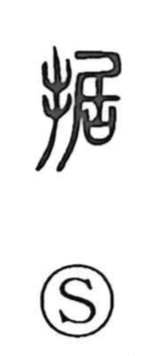

据

Uncategorized
Kun: sueru, suwaru | On: kyo
to set ・ to install ・ to place ・ to leave as is
Explanation
据 is a phono-semantic character: the hand radical signals an action done by hand, while 居 serves as the phonetic element (giving the On reading kyo). The original sense is tactile and concrete—pressing or fixing something firmly in place with the fingertips, to the point of fingertip strain. From this comes the broader idea of setting or planting something solidly, laying or placing it, and, by extension, leaving it as it is. This nuance is felt in compounds such as 拮据, where 拮 suggests agitated hand movement and 据 evokes the straining pressure of the fingertips, and in expressions like 据傲, where it historically alternates with 倨 in the sense of a haughty bearing.